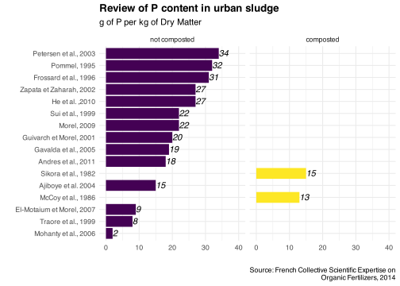
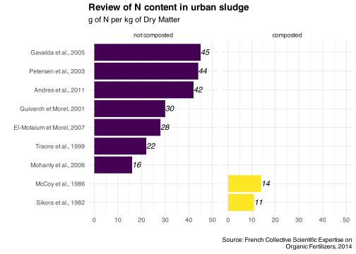
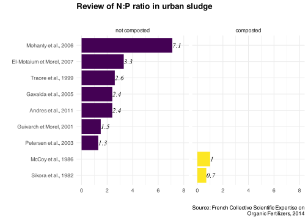
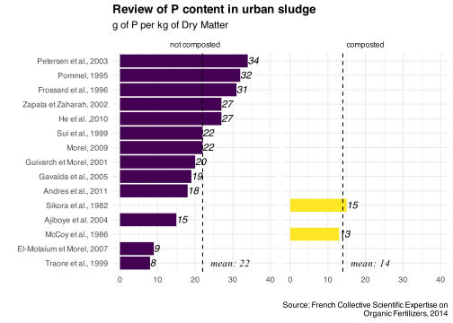

This page describes the data source used to estimate the N content of wastewater treatment plants sludge in our study, based on N:P ratio (we know the P content of sludge). The composition values listed here are also used to assess the coherence of our results.
Code
knitr::opts_chunk$set(warning=F, message=F, results=F, dev='svg')library(tidyverse) #loads multiple packages (see https://tidyverse.tidyverse.org/)#core tidyverse packages loaded:# ggplot2, for data visualisation. https://ggplot2.tidyverse.org/# dplyr, for data manipulation. https://dplyr.tidyverse.org/# tidyr, for data tidying. https://tidyr.tidyverse.org/# readr, for data import. https://readr.tidyverse.org/# purrr, for functional programming. https://purrr.tidyverse.org/# tibble, for tibbles, a modern re-imagining of data frames. https://tibble.tidyverse.org/# stringr, for strings. https://stringr.tidyverse.org/# forcats, for factors. https://forcats.tidyverse.org/# lubridate, for date/times. https://lubridate.tidyverse.org/#also loads the following packages (less frequently used):# Working with specific types of vectors:# hms, for times. https://hms.tidyverse.org/# Importing other types of data:# feather, for sharing with Python and other languages. https://github.com/wesm/feather# haven, for SPSS, SAS and Stata files. https://haven.tidyverse.org/# httr, for web apis. https://httr.r-lib.org/# jsonlite for JSON. https://arxiv.org/abs/1403.2805# readxl, for .xls and .xlsx files. https://readxl.tidyverse.org/# rvest, for web scraping. https://rvest.tidyverse.org/# xml2, for XML. https://xml2.r-lib.org/# Modelling# modelr, for modelling within a pipeline. https://modelr.tidyverse.org/# broom, for turning models into tidy data. https://broom.tidymodels.org/# Use the conflicted package (<http://conflicted.r-lib.org/>) to force all conflicts to become errors#setting graphs themetheme_set(theme_minimal() +theme(plot.title =element_text(face="bold")) )#setting viridis theme for colorsscale_colour_continuous <- scale_colour_viridis_cscale_colour_discrete <- scale_colour_viridis_dscale_colour_binned <- scale_colour_viridis_b#setting viridis theme for fillscale_fill_continuous <- scale_fill_viridis_cscale_fill_discrete <- scale_fill_viridis_dscale_fill_binned <- scale_fill_viridis_bSource <-"Sources: Water Agencies\nComputation Thomas Starck"# Load the function filesource("functions.R")
Esco MAFOR
We use a French review (collective scientific expertise) on organic fertilizers, called Esco MAFOR. Link to the review (values used page 413).
Below are the P content, N content and N:P ratio in the reported studies, for composted and not composted urban sludge. Mohanty et al. (2006) seems to be an outlier due to very low P content and high N:P ratio. We will exclude it in the following.
Code
#path of the datapath_source <-"source_data/0_sludge_composition/"#load data on sludge compositionreview_sludge <-read_csv(paste0(path_source, "sludge_composition_ESCO_MAFOR.csv")) review_sludge$compost <-factor( review_sludge$compost,c("not composted", "composted"))#caption of the graphsSource <-"Source: French Collective Scientific Expertise on\nOrganic Fertilizers, 2014"
g_composition(rounded_values, "P") +labs(title ="Review of P content in urban sludge",subtitle ="g of P per kg of Dry Matter" ) +ylim(0, 40)

Code
g_composition(rounded_values, "N") +labs(title ="Review of N content in urban sludge",subtitle ="g of N per kg of Dry Matter" ) +ylim(0, 50)

Code
g_composition(rounded_values, "N_P_ratio") +labs(title ="Review of N:P ratio in urban sludge",subtitle ="" ) +ylim(0, 8)

Code
ggsave(#svg"graphs/sludge_ratio_review.svg",dpi=500, width=6, height=4, bg="white", create.dir = T )ggsave(#pdf"graphs/sludge_ratio_review.pdf",dpi=500, width=6, height=4, bg="white", create.dir = T )ggsave(#png"graphs/sludge_ratio_review.png",dpi=500, width=6, height=4, bg="white", create.dir = T )
For P and N:P values, we remove the Mohanty et al. (2006) value which seems to be an outlier. Composted values are indicative, we will not use them because there are only 2 very old studies.
We compute 2 different mean values for the N:P ratio.
The mean of the ratios, based on the 6 values
The ratio of the N and P average contents, based on 13 P values and 7 N values
For first method gives a ratio of 2.2, the second 1.5. We will use a ratio of 2 for our study.
Code
#mean P content no compostedtemp <- review_sludge %>%filter(compost=="not composted", Study!="Mohanty et al., 2006")mean_P_no_compost <-round(mean(temp$P, na.rm=T), 0)#mean P content compostedtemp <- review_sludge %>%filter(Study!="Mohanty et al., 2006"& compost=="composted")mean_P_compost <-round(mean(temp$P, na.rm=T), 0)#mean N content not compostedtemp <- review_sludge %>%filter(compost=="not composted")mean_N_no_compost <-round(mean(temp$N, na.rm=T), 0)#mean N content compostedtemp <- review_sludge %>%filter(compost=="composted")mean_N_compost <-round(mean(temp$N, na.rm=T), 0)#mean N:P ratio not compostedtemp <- review_sludge %>%filter(compost=="not composted", Study!="Mohanty et al., 2006")mean_ratio_NP_no_compost <-round(mean(temp$N_P_ratio, na.rm=T), 1)#mean N:P ratio compostedtemp <- review_sludge %>%filter(compost=="composted")mean_ratio_NP_compost <-round(mean(temp$N_P_ratio, na.rm=T), 1)#ratio of means N and P no compostratio_means_NP_no_compost <-round(mean_N_no_compost/mean_P_no_compost, 1)#ratio of means N and P compostratio_means_NP_compost <-round(mean_N_compost/mean_P_compost, 1)#create dataset of computed valuesmean_values <-data.frame(compost =c("not composted", "composted"),P =c(mean_P_no_compost, mean_P_compost),N =c(mean_N_no_compost, mean_N_compost),N_P_mean_of_ratios =c(mean_ratio_NP_no_compost, mean_ratio_NP_compost),N_P_ratio_of_means =c(ratio_means_NP_no_compost, ratio_means_NP_compost),N_P_ratio =c(2, 0.9))mean_values$compost <-factor( mean_values$compost,c("not composted", "composted"))#save computed valuesf_save_csv_files( mean_values, "output_data/sludge_composition/","N_P_sludge_review.csv")
g_composition(rounded_values %>%filter(Study!="Mohanty et al., 2006"), "P") +labs(title ="Review of P content in urban sludge",subtitle ="g of P per kg of Dry Matter" ) +ylim(0, 40) +geom_hline(data = mean_values, aes(yintercept=P), linetype="dashed") +geom_text(data = mean_values, hjust=-0.2, family ="Times New Roman", fontface ="italic",aes(x="Traore et al., 1999", y=P, label=paste("mean:", P)) )

Code
g_composition(rounded_values, "N") +labs(title ="Review of N content in urban sludge",subtitle ="g of N per kg of Dry Matter" ) +ylim(0, 50) +geom_hline(data = mean_values, aes(yintercept=N), linetype="dashed") +geom_text(data = mean_values, hjust=-0.2, family ="Times New Roman", fontface ="italic",aes(x="Mohanty et al., 2006", y=N, label=paste("mean:", N)) )
Code
g_composition(rounded_values %>%filter(Study!="Mohanty et al., 2006"), "N_P_ratio") +labs(title ="Review of N:P ratio in urban sludge",subtitle ="we will use a N:P ratio of 2 for uncomposted sludge" ) +ylim(0, 4) +#mean of ratiosgeom_hline(data = mean_values, aes(yintercept=N_P_mean_of_ratios, linetype="mean of ratios")) +geom_text(data = mean_values, hjust=-0.2, family ="Times New Roman", fontface ="italic",aes(x=c("Sikora et al., 1982", "Traore et al., 1999"), y=N_P_mean_of_ratios, label= N_P_mean_of_ratios) ) +#ratio of meansgeom_hline(data = mean_values, aes(yintercept=N_P_ratio_of_means, linetype="ratio of means")) +geom_text(data = mean_values, hjust=1.2, family ="Times New Roman", fontface ="italic",aes(x=c("Sikora et al., 1982", "Traore et al., 1999"), y=N_P_ratio_of_means, label= N_P_ratio_of_means) ) +theme(legend.position ="top") +labs(linetype="") +guides(fill ="none") #not showing composted/not composted legend